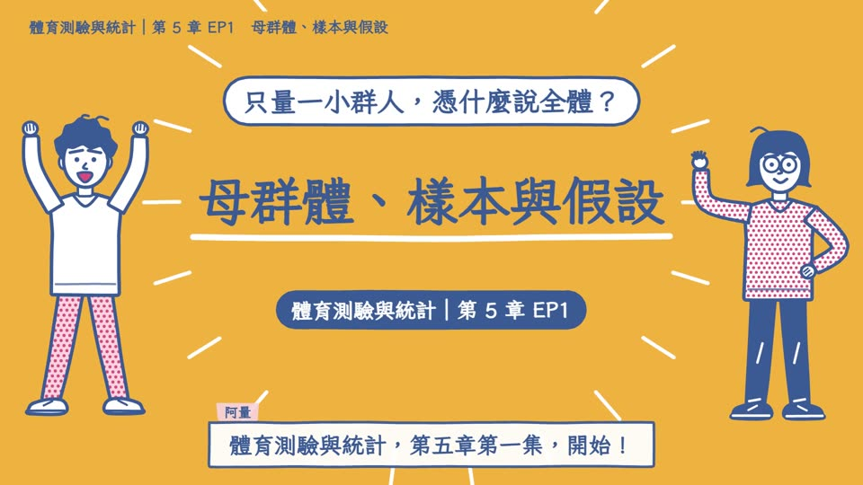
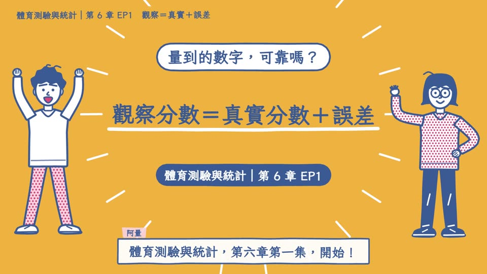

六章目錄
全站共 24 集短片、32 個互動工具、48 題自我檢測。每章約需 40 到 60 分鐘，可以分次完成。
 CH 01
CH 01測驗與測量的概念
用收縮壓 135、每天 8,000 步、十週減重 4.5 公斤和一台每次多 3 公斤的體重計，把第 1 章的名詞一個一個分清楚。每看完一集短片，就動手拖下面的工具，看同一個數字換了標準之後，評價怎麼跟著變。
- EP1測驗・測量・評價
- EP2跟誰比？常模與效標
- EP3什麼時候評？為什麼評？
- EP4這把尺可靠嗎？信度與效度
 CH 02
CH 02測驗與評量的應用技術
這一頁用講義表 2-1 的十位受試者資料，帶你把「排成資料矩陣、輸入軟體、做出描述統計表」走一遍。每看完一集短片，就用下面的工具點一點表格、改一改數字，最後自己在 Excel 算出 BMI 的平均 20.70 與標準差 2.13。
- EP1一萬筆資料怎麼辦？為什麼要用電腦
- EP2資料矩陣：一列一個人，一欄一個變項
- EP3SPSS 與 Excel 起手式
- EP4第一張描述統計表
 CH 03
CH 03描述統計與常態分配
這一章用 65 位同學的最大攝氧量（講義表 3-1）回答一個問題：James 測到 50，算高還是算低？你會看四集短片，動手玩五個工具（判斷測量尺度、加入極端值、一欄一欄算變異數、換算 z 分數與 T 分數、查常態曲線面積），再自己把每個數字算一遍。
- EP1四種測量尺度
- EP2集中趨勢與分配形式
- EP3變異量數：全距、變異數、標準差
- EP4標準分數與常態曲線
 CH 04
CH 04相關和預測
這一章用講義表 4-1 的 10 位受試者（體重、反手與正手引體向上），先從散布圖看出相關的方向和強度，再親手把 r＝0.89 算出來。接著用互動工具拆開相關係數的幾個陷阱，最後畫出迴歸直線 Y′＝0.756X＋0.75，預測新同學的成績，並估計大概會差多少。
- EP1相關係數是什麼
- EP2動手算相關係數
- EP3相關係數的陷阱
- EP4用相關來預測：迴歸直線

CH 05推論統計
這一頁用講義的五份小資料（30 人的性別與課程、兩份發球分數、臥舉重量、守備測驗），把卡方考驗、t 考驗和變異數分析各算一次。先用六個互動工具看懂抽樣誤差、α、β 和 p 值，再到「動手算」用 Excel 算出和講義 SPSS 輸出一樣的數字。
- EP1母群體、樣本與假設
- EP2兩種錯誤與 p 值
- EP3卡方與 t 考驗
- EP4變異數分析

CH 06信度與效度的理論
這一章只問一件事：量到的數字能不能相信。你會用講義表 6-1 的十筆收縮壓把變異數拆開、算出信度 0.87，用表 6-2 到表 6-6 算出再測信度、折半信度、alpha 係數與測量標準誤，最後用表 6-9 兩台血壓計的資料畫出 Bland-Altman 圖。
- EP1觀察分數＝真實分數＋誤差
- EP2信度怎麼算
- EP3效度的三種證據
- EP4兩種量法一致嗎？Bland-Altman 圖
進度與作答只保存在你目前使用的瀏覽器，換一台裝置或清除瀏覽資料後會重新計算。